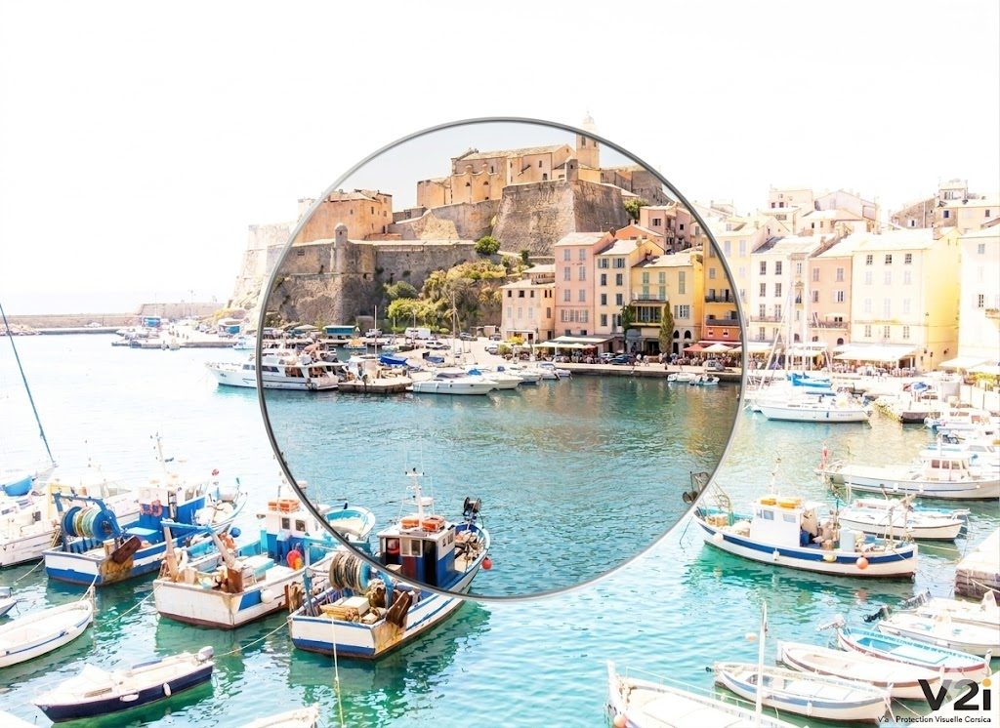

Bonjour, Magasin
Accédez aux outils de précalibrage et surfaçage haute définition.
Calcul Verre Pro
Simulateur d'atelier aux normes boxing et géométrie ménisque.

Configuration Labo V2i
Paramètres physiques de surfaçage.
Dimensions Monture (Norme Boxing)
Centrages Morphologiques (mm)
Œil Droit
Œil Gauche
Réfraction Prescription
Oeil Droit (OD)
Sph :
Cyl :
Axe :
Oeil Gauche (OG)
Sph :
Cyl :
Axe :
Analyse de Face & Centrage
Survolez pour simuler le scan d'épaisseur angulaire.
Géométrie Réelle en Coupe (Ménisque Optique — Non biconcave)
Épaisseur survolée : -- mm
Bord Externe (Temporal)-- mm
Centre Optique-- mm
Bord Interne (Nasal)-- mm